Global sustainability action think tank
ESGIN converts real-world sustainability experience into practical action frameworks, practitioner intelligence, and implementation pathways.
Global framework, local execution

FIH is managed by Global ESG Leadership Organization. Future Intelligence Hub by Global ESG Leadership Organization.
An AI-powered social innovation and micro-entrepreneurship incubation hub empowering sustainable urban and community development.
FIH connects people, knowledge, resources, and solutions so local innovators can move from learning and ideas into real-world implementation.
Future Intelligence Hub is built for a practical gap: AI opportunities are expanding faster than many micro-entrepreneurs and local innovators can access tools, mentorship, capital, and implementation pathways.
Managed by ESGIN
The Global ESG Leadership Organization (ESGIN) is an international, implementation-oriented sustainability organization registered in the United Kingdom and headquartered in Seattle, USA. ESGIN operates as a global multi-stakeholder platform connecting business leaders, sustainability practitioners, policymakers, financial institutions, academia, youth leaders, women leaders, and civil society actors.
Unlike organizations focused mainly on policy advocacy or awareness-building, ESGIN emphasizes measurable implementation and institutional capacity-building. FIH translates that global framework into physical, city-level action through AI-powered social innovation and micro-entrepreneurship incubation.
Visit ESGINESGIN converts real-world sustainability experience into practical action frameworks, practitioner intelligence, and implementation pathways.
ESGIN is listed in the introduction as a UN Global Compact participating organization since May 2025 and a UN-supported PRI signatory since 2024.
FIH follows a Global Host plus Local Implementation Partner model: globally standardized, locally executed, and grounded in each city's real needs.
Operating model
FIH is not another startup competition, training course, or co-working space. It is a repeatable city-level platform where learning, practice, creation, validation, and implementation happen together.
Workshops, mentorship, and hackathons help innovators define problems, design business models, plan resources, communicate value, and execute with teams.
FIH supports practical AI use while strengthening judgment, communication, creativity, leadership, upskilling, and reskilling.
Innovators connect city-specific challenges with the UN Sustainable Development Goals and responsible business thinking.
Banking, investment, corporate, government, and community pathways help promising solutions move into pilots, adoption, organizations, or company formation.
City network
Each city follows the same core framework: global host, local implementation partner, and local venue support. Public location details will be announced as each site is confirmed.
Locations
ESGIN infrastructure pillars
Capability-building for SME owners, professionals, women, youth, and emerging leaders through structured education and applied learning.
Applied sustainability knowledge through ESG in Action Monthly, implementation case learning, and practitioner-informed insight.
Practical solutions and policy contributions through UN DESA Doha Solutions Platform submissions, papers, and stakeholder consultations.
Regional chapters, cross-sector dialogues, peer learning platforms, and FIH as ESGIN's flagship urban innovation platform.
Doha Solutions Platform initiatives
A world leaders mentorship initiative for youth development.
Global impact fund roundtable and ethical investor ecosystem.
AI-driven global regeneration for women leaders.
AI-driven ESG and SDG transformation for SMEs, enterprises, and communities.
Economic empowerment through inclusive financial literacy.
Inclusive enterprise and merchant support for women's economic participation.
Ethical, responsible, and safe digital citizenship for young people.
ESGIN's flagship city innovation platform for AI-powered implementation.
Impact framework
Governance and contact
ESGIN is headquartered in Seattle, United States, and registered in the United Kingdom under Company No. 15443379, with registered office at 128 City Road, London EC1V 2NX.
Governance principles listed in the organization introduction include transparency, accountability, integrity, responsible stewardship, and conflict-of-interest management.
Website: www.esgin.org | Contact: acc@esgin.org
Partner with FIH
FIH welcomes venue providers, public-sector collaborators, corporate sponsors, technology partners, foundations, mentor networks, and solution adopters.